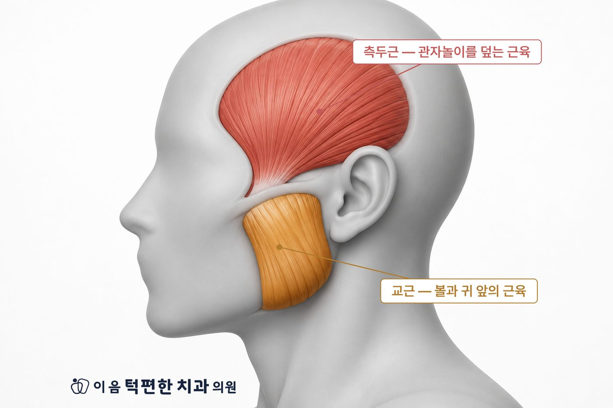
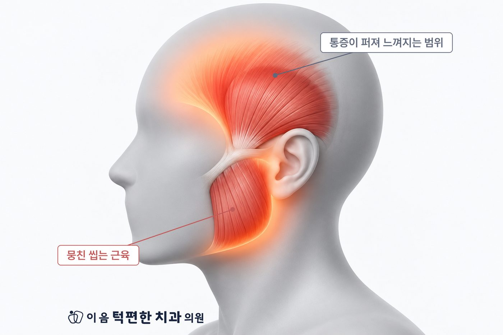

관자놀이를 부채처럼 덮는 측두근, 볼과 귀 앞의 교근 — 씹는 근육은 머리 옆면에 붙어 있습니다.
이 근육에 피로와 통증이 쌓이면 "머리가 아프다"고 느끼게 됩니다.
씹을 때 심해지고, 관자놀이를 누르면 평소의 두통이 그대로 재현되는 것이 특징입니다.
두통의 원인은 매우 다양합니다. 갑자기 시작된 심한 두통, 팔다리 저림·시야 이상이 함께라면 신경과 진료가 먼저입니다.
근육에는 눌렀을 때 유난히 아픈 예민한 지점이 생길 수 있습니다. 이 지점의 특징은 아픈 자리와 느껴지는 자리가 다를 수 있다는 것입니다. 이를 연관통이라고 합니다.
측두근의 예민한 지점은 관자놀이와 눈썹 위로 통증을 보내고, 교근은 귀 앞과 아래턱 방향으로 보냅니다. 본인은 머리가 아프다고 느끼지만, 실제 문제는 씹는 근육에 있는 경우가 생기는 이유입니다.

국제두통질환분류(ICHD-3)에는 '턱관절장애에 기인한 두통'이 별도 항목으로 정리되어 있습니다. 턱관절장애에서 두통은 비교적 흔하게 함께 나타나는 증상입니다.
모든 두통을 턱으로 설명할 수는 없습니다. 위에 해당하면 턱보다 신경과 확인이 먼저입니다.
두통이 언제, 어디가, 어떤 상황에서 아픈지 먼저 여쭙니다. 이어서 측두근·교근의 압통, 귀 앞 턱관절의 압통, 입 벌림 범위, 치아의 맞물림과 목의 자세를 함께 확인합니다.
눌렀을 때 평소의 두통이 재현되는지가 중요한 단서입니다. 영상검사는 필요하다고 판단될 때에만 선택합니다.
치료가 필요한 경우 생활습관 조절, 물리치료, 약물, 교합안정장치(스플린트)처럼 되돌릴 수 있는 보존적 방법부터 검토합니다. 신경과적 원인이 의심되면 해당 진료를 함께 받으시도록 안내합니다.
두통 진료를 받아도 잘 잡히지 않는다면, 씹는 근육과 턱의 움직임을 함께 확인해 드립니다.
전화 상담 02-6745-2754이 페이지는 일반적인 건강정보이며 개인의 진단이나 치료를 대신하지 않습니다. 증상이 지속되거나 갑자기 악화되면 의료기관에서 진료를 받으시기 바랍니다.